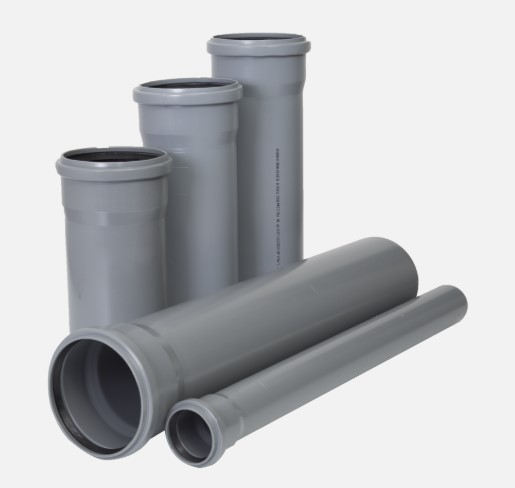
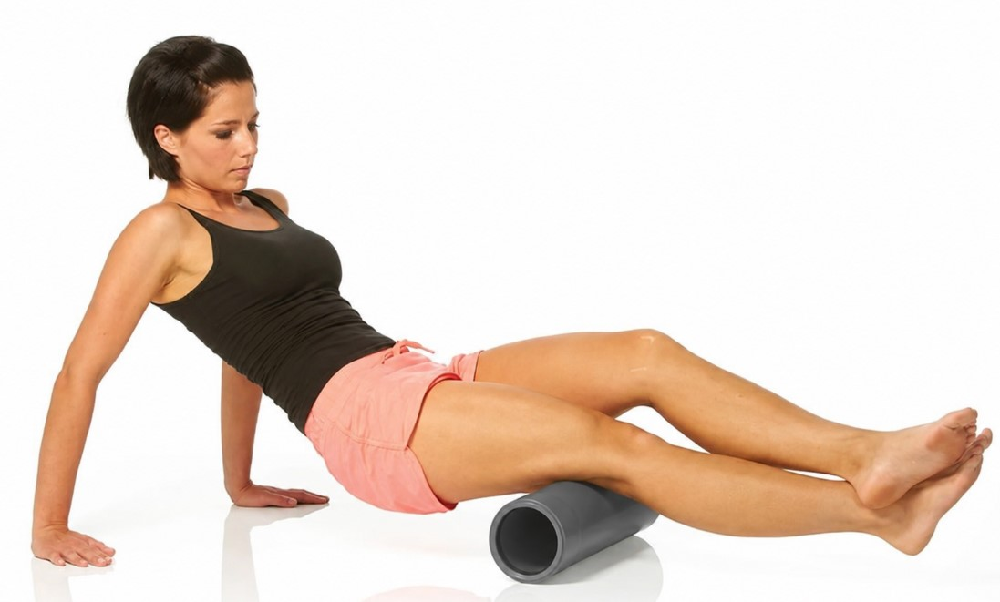

Как снять боль в домашних условиях
Ты понял причину и понял, откуда берётся боль. Теперь действие. Первый подход можно сделать прямо сегодня, тем, что лежит дома или доступно в магазине сантехники.
Только сразу честно. Боль не уйдёт в тот же день, и обещать такое было бы враньём. Спина копила спазм годами, и мышцам нужно время, чтобы отпустить. Но путь начинается здесь и сейчас, а первые перемены ты почувствуешь уже через несколько дней работы.
Начинаем с ног
Это удивляет почти всех. В первую очередь укорачиваются мышцы на ногах, и часто именно они тянут поясницу за собой. Не сама спина, а ноги.
Поэтому ноги прорабатываем в первую очередь, а не только поясницу. Держи это в голове.
Чем катать прямо сейчас
Тебе хватит того, что есть под рукой:
- Свёрнутое полотенце. Скрути его потуже в плотный валик.
- Пластиковая бутылка с водой. Наполни и закрути крышку. Для ног отличный старт.
- Сантехнические трубы. Загляни в магазин сантехники и возьми две трубы по 50 см длиной, стоят копейки. Потолще, 110 мм, для ног (ягодицы и бёдра). Потоньше, 50 мм, для икр.

Как это делается
Кладёшь валик, трубу или бутылку под мышцу, опираешься на неё своим весом и медленно прокатываешь зажатую зону. Нашёл болезненную точку, тот самый узелок, задержись на нём и дай ему продавиться. Мышца сначала сопротивляется, потом отпускает.

Твоя задача на этом шаге простая: начать и почувствовать, что на боль реально можно влиять. Точную технику, куда именно, как и сколько, я показываю отдельно в полном методе.
Частые ошибки: чего делать нельзя
- Не катай прямо по позвоночнику, по самим костям. Работаем только с мышцами по бокам от него.
- Боль должна быть терпимой. Это действительно больно, и эту боль надо перетерпеть, это та боль, что лечит, а не калечит. Но «сквозь слёзы, до потемнения в глазах» нельзя.
- Начинай мягко и недолго, пара минут на зону. Не геройствуй в первый день.
- Если после первой прокатки разболелось сильнее, это нормально. Переждать 2-3 дня, не трогать, потом начать снова, и будет уже легче.
- Если боль резко усилилась или нога онемела, снизь нагрузку и понаблюдай за собой. Не дави через силу, дай телу день-другой прийти в себя.
Что дальше
За пару дней ты почувствуешь: боль отступает, и она тебе подвластна. Но есть кое-что важное, без чего она вернётся снова, даже если ты делаешь всё правильно. Об этом в следующем шаге.